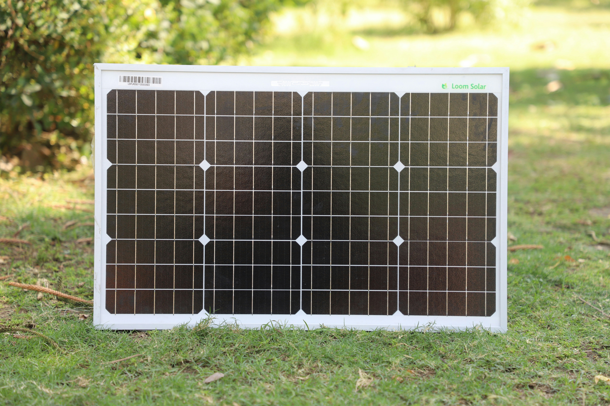
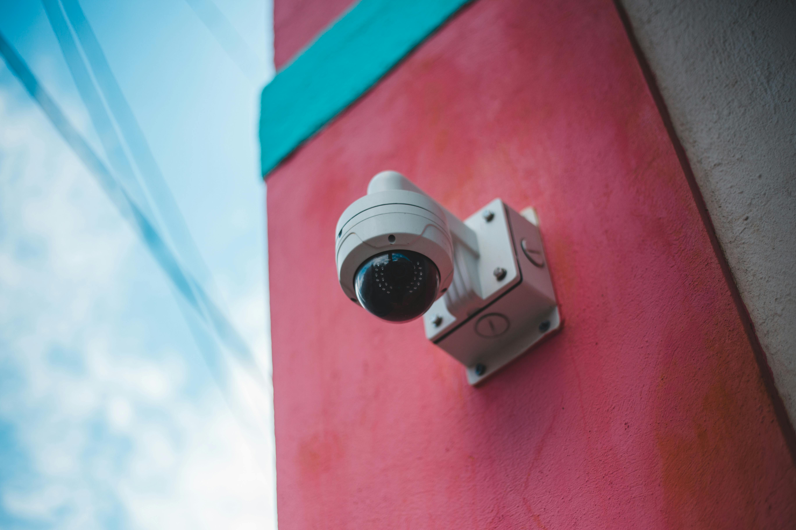

Light a shack intiative

Our "Light a shack" project was one of our most successful projects from 2025. We Distributed 100 portable solar panels and solar panel lanterns to over a hundred homes in Delft and Khayelitsha. These areas are know to be some of the darkest and dangerous informal settlements in Cape Town. By providing them with these solar panels,we have given them a source of energy as well as helped prevent the use of fire hazards such as candles. Our other projects consist of the "Safe Route" initiative, whereby we installed 10 solar powered LED motion sensing lights along a main artery used by commutors walking home from taxi ranks. This project had increased the foot traffic in that area by 12%, 18% less than our goal but an impact is an impact.Our Future projects
We plan to increase the number of projects we accomplish per year from 2 to 4 with the help of the Western Cape government as well as help from funders. Our most anticipated project for this year is our "Eyes on the street". This initiative focuses on securing the cooperation of local businesses in dangerous areas to install high-definition CCTV cameras. The cameras are to be linked to a local monitoring hub (or a neighborhood watch) and powered by mini solar backups so they stay on during loadshedding. With this project we hope to assist police in catching perpetrators and dettering criminal activity. Furthermore we wish to conduct workshops for neighborhood watch volunteers in Delft on how to maintain solar equipment and how to coordinate "dark-hour patrols" using KNIGHTLY-provided high-output torches as well as personal safety equipment , such as batons and non-lethal detterents.
